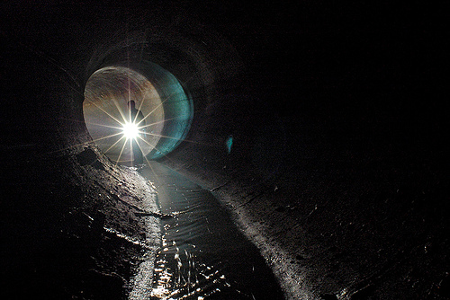

Thursday, July the 30th, 2009
back to: title, date or indexes
First we had Blodgett in the sewers, now Mr Key himself has been squelching through the subterranean murk. You can hear the results in an episode of Tunnel Vision on ResonanceFM—go here for further details, I am not sure in which week my troglodyte adventures will be broadcast, but you should listen to the entire series in any case. My thanks to Bruno Rinvolucri, who made the programmes, took me down into the sewers (at West Dulwich) and, more importantly, led me back to the surface again.
